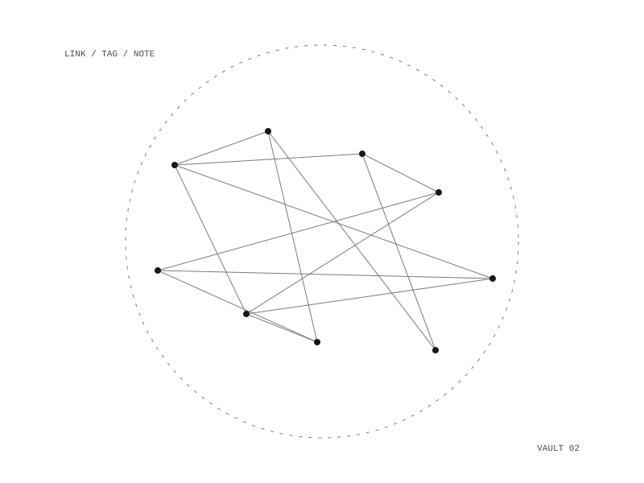

vault
vault answers link and tag questions about a folder of Markdown notes from the command line. It uses only the Python standard library, so it runs without a virtual environment. Most commands print one path:line: line per hit, with paths relative to the vault root, so results read like grep.

Commands
- `backlinks
`: notes that `[[link]]` to the note - `links
`: the `[[wikilinks]]` in one file broken [folder]: wikilinks with no matching note- `tag
[folder]`: notes carrying `#tag` or the tag in their `tags:` frontmatter threads: the top-level folders, most recently touched firstdupes [folder]: Markdown files with identical content
How it reads links
A wikilink's target is taken without any #heading or |alias part. A backlink matches on the note's name, with or without .md, or on a path that ends in that name. A link counts as broken when neither a note of that name nor a note at that path exists anywhere in the vault. Files and folders whose names start with a dot are skipped.
Tags, threads and duplicates
A tag is found inline as #tag, or in frontmatter as either tags: [a, b] or a tags: list with one item per line, and it does not match longer words that contain it. threads prints each top-level folder with the date of its newest note and its number of notes. dupes groups files by a SHA-256 hash of their contents and prints each group that has more than one file. Folder and file arguments can be absolute, relative to the current folder, or relative to the vault, and the vault root can be set with an environment variable.
backlinks, links, broken, tag, threads, dupes
Python, standard library only
path:line per hit, like grep